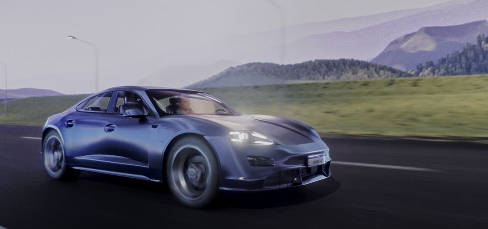
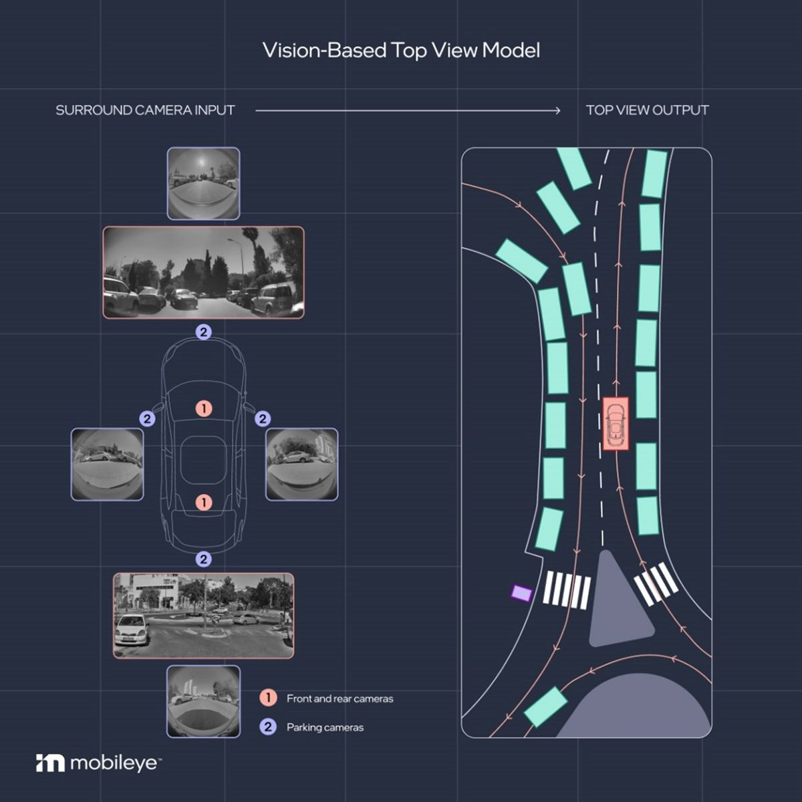
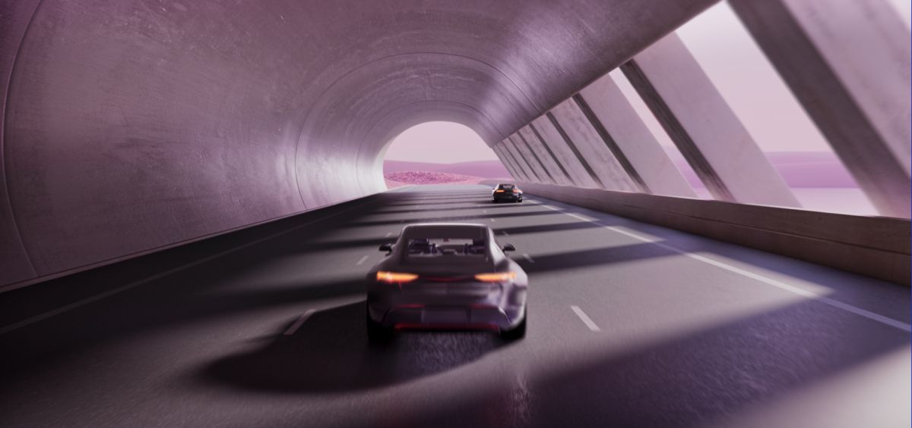
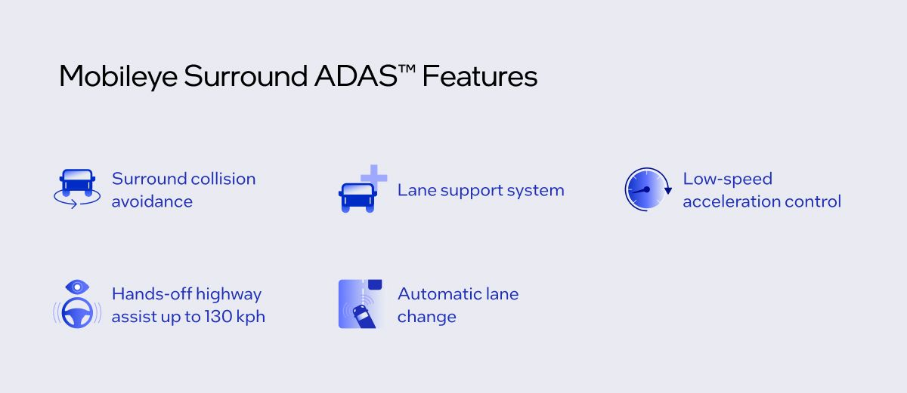
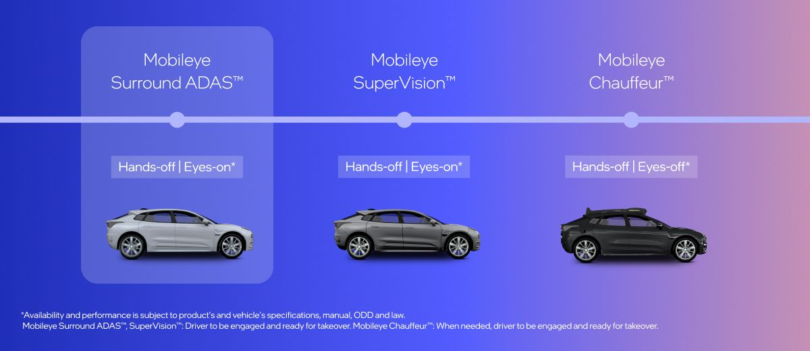
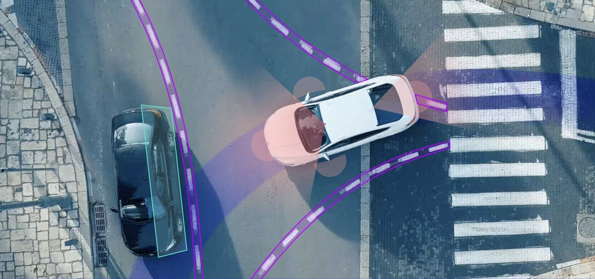

2025年3月25日 · Mobileye
Surround ADASの登場：安全性と技術の新たな標準
Mobileye Surround ADASは、運転支援技術の進化における長年の課題に取り組む新たなセグメントだ

今日、運転支援システムを選ぶ際、自動車メーカーは通常二択を迫られる。量販市場向け車両に適した価格帯の基本的なADASか、あるいは複数のカメラ・レーダー・プロセッサ・ECUを搭載し、限定的なハンズフリー運転などの機能を提供できる先進システムか。後者はシステムコストの高さからプレミアムモデルにしか搭載できない。
その状況が今、Mobileye Surround ADAS™の登場で変わろうとしている。本システムは、1基のMobileye EyeQ™6 High System-on-Chip（SoC）上で動作する自動運転開発由来のMobileyeの高度なソフトウェアスタックを用いて、ソフトウェア定義のハンズオフ・アイズオン走行を実現する垂直統合型ソリューションを提供する。
AIの最新進歩を活用することで、最大11基のセンサー（複数のカメラと複数のレーダー）を単一のECUで処理できるようになった。コンピュータービジョン、センサーフュージョン、REM™クラウドソーシングマッピング、走行ポリシー、そしてOTA（Over-the-Air）アップデートを統合している。
その結果、このADASシステムは不可欠な安全機能を提供するだけでなく、その運用設計領域（ODD）内において——例えばさまざまな道路種別でのハンズフリー走行やスマートパーキングといった——プレミアムな運転体験も提供するよう設計されている。これは、高速道路自動化に対する消費者の高まる期待と、今後強化される安全規制の両方に応えるものだ。さらにシステムコストを引き下げることで、Surround ADASは自動車メーカーがこれらの機能を数百万台の量販市場向け車両に搭載できる道を切り開く——最初の事例はすでに数年以内に市場投入が予定されている。

このシステムの核心には、Mobieyeによるソフトウェアイノベーションがある。それは高度な人工知能技術——エンドツーエンド認識ソフトウェアと他の主要なブレークスルーを融合したコンパウンドAIシステムを含む——を駆使して具現化され、生のセンサーデータを正確で実行可能な洞察へと変換するよう設計されている。
Mobieyeの自律走行ソリューション開発経験とSuperVisionハンズフリー点間走行システムを活用することで、MobieyeはコアソフトウェアスタックにREMデータを統合し、OTAによる新機能の継続的なアップデートを可能にすることで、通常のADAS機能の知能を高めることができる。このソフトウェア定義アプローチで実現される主なソリューションは以下の通りだ：
- 高速道路および選択された道路種別でのアイズオン・ハンズオフ走行（最大130 km/h）
- サラウンド衝突回避
- レーンサポートシステム
- 低速加速制御
- 自動レーン変更

ソフトウェアファーストの機能により、自動車メーカーはMobileyeのツールを新たな方法で活用できる。例えば、ハンズフリー走行は「Driving Experience Platform（DXP）」を通じて安全パラメータ内でチューニングできる。また、パーキング機能やドライバーモニタリングシステムなど他のソフトウェアも、機能要件をサポートするために自動車メーカーと密接に連携しながら単一のECUに統合できる。さらに車内ディスプレイは、システムが生成するリッチなデータフローを活用して、ドライバーと情報を共有する新しくスマートに統合された手段を提供できる。

このシステムは通常、前方長距離カメラ1台、短距離パーキングカメラ4台、および最大5台のレーダーで構成され、後方長距離カメラなど追加センサーの搭載も可能だ。2025年3月にはVWとの量販モデルへの最初のSurround ADAS設計受注が発表された。
Surround ADASは高速道路および選択された道路種別でのハンズフリー走行と高度な衝突回避を提供するが、これはMobileye SuperVision™とは異なる。SuperVisionはアーバンパイロット機能を含む真の点間ナビゲーション機能を追加しており（各場合、その運用設計領域内）、アイズオフ自律走行へのスケーラブルなパスを求める自動車メーカー向けにMobileyeがプレミアムアイズオン・ハンズオフ走行ソリューションとして位置付けている。Surround ADASにより、自動車メーカーはEyeQ6Hベースのソリューションの全スペクトルを活用し、プレミアムセグメントと量販セグメントの両方の車両で高度なアクティブセーフティと自動化をより広く利用可能にできる。

なぜ市場は新たなカテゴリーを必要としているのか
技術的進歩にとどまらず、この新しいADASカテゴリーは、業界が直面するいくつかの課題——特に過度に複雑で断片化したサプライチェーンエコシステムに起因する高いシステムコスト——に応える形で生まれた。自動車メーカーがシンプルなソフトウェア定義アーキテクチャへ向かう中、車両のハードウェア複雑性を低減することが重要な目標となっている。MobileyeのSurround ADASは、単一ECU構造、容易な統合、そして最も重要なクラス最高のシステムパフォーマンスを通じてその目標を実現する。
これらの変化はまた、さらなる車両安全性への需要によっても推進されている。消費者は包括的な安全機能を標準として期待し、規制当局は増加する混雑や運転中の不注意を背景に、道路安全の改善と事故のさらなる削減に向けて厳格なガイドラインを施行しつつある。例えばヨーロッパでは、近い将来5つ星EuroNCAP評価を目指す自動車メーカーはサラウンドセンシングシステムへのアップグレードが必要になる。規制当局は、サイドビューカメラとワイドアングルカメラが車両・歩行者・自転車乗り・他の道路利用者を重要な場面でいかに広く守るかを認識しているからだ。

究極的には、消費者がこの進化の中心にいる。彼らは、ハイエンドモデルで普及したプレミアムなハンズオフ運転体験が、より広い市場へ民主化されることを望んでいる。特定の道路と条件における限定的なハンズオフ走行は自律性の中で最も急成長しているレベルであり、2030年までに新車の4台に1台がこの機能を搭載するとの予測がある。
自動車メーカーにとって、この新しいカテゴリーは自動車業界全体にわたる複数の変化——すべてがADAS能力の新たな章へと収束する変化——を体現する。それは、今日のプレミアムな運転体験の快適さと利便性を、前例のない規模で道路にもたらす機会だ。Mobileye Surround ADASによって、自動車メーカーは現代のドライバーが求める高度な安全性と利便性を実現できる。